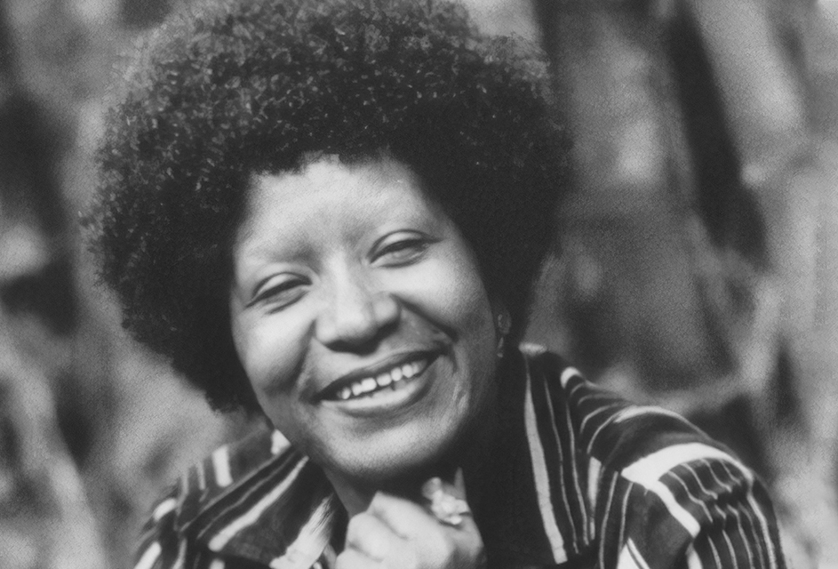

Nascimento
Nasce em Belo Horizonte, Minas Gerais, em uma família numerosa.

1935 — 1994
Intelectual, antropóloga, professora e ativista
Pensar o Brasil a partir das vozes negras, indígenas e populares que a história tentou silenciar.
Amefricanidade como chave para compreender as Américas.
Lélia Gonzalez articulou racismo, sexismo, cultura e linguagem para interpretar o Brasil e a América Latina. Sua escrita aproximou pesquisa, militância e experiência cotidiana, abrindo caminhos decisivos para o feminismo negro.
Consultar Projeto Memória Lélia GonzalezNascida em Belo Horizonte, Lélia mudou-se ainda criança para o Rio de Janeiro. Formou-se em História e Filosofia, fez mestrado em Comunicação e doutorado em Antropologia, construindo uma trajetória marcada pelo ensino e pela pesquisa.
Participou da criação do Movimento Negro Unificado e do Nzinga — Coletivo de Mulheres Negras. Em seus textos, mostrou como o racismo e o sexismo estruturam a sociedade brasileira e valorizou a presença africana e indígena na cultura das Américas.
Ao formular ideias como amefricanidade e pretuguês, Lélia questionou modelos importados e deu centralidade às formas de falar, viver e resistir produzidas por povos negros e indígenas.
Consultar Projeto Memória Lélia GonzalezMomentos que ajudam a compreender a atuação de Lélia Gonzalez.
Nasce em Belo Horizonte, Minas Gerais, em uma família numerosa.
Participa da formação do MNU, organização decisiva na luta antirracista brasileira.
Ajuda a fundar o Coletivo de Mulheres Negras Nzinga, no Rio de Janeiro.
Publica reflexões que consolidam o conceito de amefricanidade em sua obra.
Fonte dos acontecimentos: Projeto Memória Lélia Gonzalez.
Lélia transformou a forma de interpretar raça, gênero, cultura e linguagem no Brasil.
Criou uma perspectiva que aproxima experiências negras e indígenas das Américas, recusando leituras centradas apenas na Europa.
Evidenciou que racismo e sexismo atuam juntos e que a experiência das mulheres negras precisa ocupar o centro do debate político.
Valorizou o pretuguês e outras marcas africanas na língua e na vida brasileira como formas de memória e resistência.
Conteúdo baseado em Projeto Memória Lélia Gonzalez.
Um registro visual que acompanha a trajetória de Lélia Gonzalez.
Referências usadas para organizar esta trajetória e caminhos para aprofundar a pesquisa.
Projeto Memória Lélia Gonzalez
Acervo biográfico sobre a vida, a produção intelectual e a atuação política de Lélia Gonzalez.
Consultar fonteLiterafro — UFMG
Wikimedia Commons
Página de origem e informações de uso da imagem apresentada.
Consultar fonteExplore as 10 trajetórias de mulheres negras e as 10 trajetórias de mulheres indígenas.